Week 3b - Statistics for Bioengineering
Sampling, parameter estimation, error and power
Key dplyr verbs
There are five key dplyr verbs that you need to learn.
filter: Filter (i.e. subset) observations (rows) based on their values.
select: Select (i.e. subset) variables (columns) by their names:
arrange: Arrange (i.e. reorder) rows based on their values.
mutate: Create new columns.
summarise: Collapse multiple rows into a single summary value.1
filter(), arrange() & select()

conditionals
==equals exactly<, <=is smaller than, is smaller than or equal to>, >=` is bigger than, is bigger than or equal to!=not equal to!NOT operator, to specify things that should be omitted&AND operator, allows you to chain two conditions which must both be met\|OR operator, to chains two conditions when at least one should be met%in%belongs to one of the following (usually followed by a vector of possible values)
The AND (&) and the OR (|`) operators are also super useful when you want to separate data based on multiple conditions.
mutate() & transmutate()
group_by( ) & summarize( )
This first function allows you to aggregate data by values of categorical variables
Once you have done this aggregation, you can then calculate values (in this case the mean) of other variables split by the new aggregated levels of the categorical variable
- Note - you can get a lot of missing values!
- That’s because aggregation functions obey the usual rule of missing values:
- if there’s any missing value in the input, the output will be a missing value.
- fortunately, all aggregation functions have an na.rm argument which removes the missing values prior to computation
Other dplyr goodies
group_byandungroup: For (un)grouping. - Particularly useful with thesummariseandmutatecommands, as we’ve already seen.
slice: Subset rows by position rather than filtering by values. - E.g.starwars %>% slice(c(1, 5))
pull: Extract a column from as a data frame as a vector or scalar. - E.g.starwars %>% filter(gender=="female") %>% pull(height)
countanddistinct: Number and isolate unique observations. - E.g.starwars %>% count(species), orstarwars %>% distinct(species)
You could also use a combination of
mutate,group_by, andn(), e.g.starwars %>% group_by(species) %>% mutate(num = n()).
Probability, distributions and sampling
Random variables & probability
Probability is the expression of belief in some future outcome
A random variable can take on different values with different probabilities
The sample space of a random variable is the universe of all possible values
The sample space can be represented by a
- probability mass distribution (discrete)
- probability density function (PDF) (continuous)
- algebra and calculus are used for each respectively
- probabilities of a sample space always sum to 1.0
How does it make sense that a sample space will always sum to 1?
Bernoulli distribution
Describes the expected outcome of a single event with probability
pExample of flipping of a fair coin once
\[Pr(X=\text{Head}) = \frac{1}{2} = 0.5 = p \]
\[Pr(X=\text{Tails}) = \frac{1}{2} = 0.5 = 1 - p = q \]
Bernoulli distribution
- If the coin isn’t fair then \(p \neq 0.5\)
- However, the probabilities still sum to 1
\[ p + (1-p) = 1 \] \[ p + q = 1 \]
- Same is true for other binary possibilities
- success or failure
- yes or no answers
- choosing an allele from a population based upon allele frequencies (Hardy-Weinberg ring any bells??)
Probability rules
- Flip a coin twice
- Represent the first flip as ‘X’ and the second flip as ‘Y’
\[ Pr(\text{X=H and Y=H}) = p*p = p^2 \] \[ Pr(\text{X=H and Y=T}) = p*q = pq = p^2 \] \[ Pr(\text{X=T and Y=H}) = q*p = pq \] \[ Pr(\text{X=T and Y=T}) = q*q = q^2 \]
Probability rules
- Probability that the
HandTcan occur in any order
\[ \text{Pr(X=H) or Pr(X=T)} = p+q=1\]
\[ \text{Pr(X=H and Y=T) or Pr(X=T and Y=H)} = \] \[ (p*q) + (p*q) = 2pq \]
- These are the ‘and’ and ‘or’ rules of probability
- ‘and’ means multiply the probabilities
- ‘or’ means sum the probabilities
- most probability distributions can be built up from these simple rules
Let’s simulate some coin flips
Let’s simulate some coin flips
- What happens when we change the probabilities or the sample size? How confident are we that our coin is fair?
Joint probability
\[Pr(X,Y) = Pr(X) * Pr(Y)\]
- Note that this is true for two independent events
- However, for two non-independent events we also have to take into account their covariance
- To do this we need conditional probabilities
Conditional probability
- For two independent variables: Probability of Y, given X, or the probability of X, given Y.
\[Pr(Y|X) = Pr(Y)\text{ and }Pr(X|Y) = Pr(X)\]
- For two non-independent variables
\[Pr(Y|X) \neq Pr(Y)\text{ and }Pr(X|Y) \neq Pr(X)\]
- Variables that are non-independent have a shared variance, which is also known as the covariance
- Covariance standardized to a mean of zero and a unit standard deviation is correlation
Expectation and Moments of Distributions
- Distributions have moments that can be estimated
- 1st moment - The expectation or mean of a discrete random variable X is:
\[E[X] = \sum_{\text{all x}}^{}xP(X=x) = \mu\]
- Often we want to know how dispersed the random variable is around its mean.
- 2nd moment - the measure of dispersion is the variance
\[Var(X) = E[X^2] = \sigma^2\] - and the standard deviation is just the square root of the variance
\[ \sqrt{\sigma^2}\] - There are higher moments of distributions (e.g. skew and kurtosis)
What is Likelihood vs. Probability?
The probability of an event is the proportion of times that the event would occur if we repeated a random trial over and over again under the same conditions.
The likelihood is a conditional probability of a parameter value given a set of data
The likelihood of a population parameter equaling a specific value, given the data
L[parameter|data] = Pr[data|parameter]
Likelihood function is the range of likelihoods over the parameter space
Maximum likelihood is the highest value of the likelihood function
What is a Bayesian estimate? - the use of prior distribution to update a posterior distribution
Binomial Distribution
A binomial distribution results from the combination of several independent Bernoulli events
Example
- Pretend that you flip 20 fair coins
- or collect alleles from a heterozygote
- Now repeat that process and record the number of heads
- We expect that most of the time we will get approximately 10 heads
- Sometimes we get many fewer heads or many more heads
- Pretend that you flip 20 fair coins
Binomial Distribution
- The distribution of probabilities for each combination of outcomes is
\[\large f(k) = {n \choose k} p^{k} (1-p)^{n-k}\]
nis the total number of trialskis the number of successespis the probability of successqis the probability of not success- For binomial as with the Bernoulli
p = 1-q
Binomial Probability Distribution
- Note that the binomial function incorporates both the ‘and’ and ‘or’ rules of probability
- This part is the probability of each outcome (multiplication)
\[\large p^{k} (1-p)^{n-k}\]
This part (called the binomial coefficient) is the number of different ways each combination of outcomes can be achieved (summation)
\[\large {n \choose k}\] Together they equal the probability of a specified number of successes
Binomial Probability Distribution

Testing Binomial Distributions
- dbinom gives the density (probability) of number successes (x) in number trials (size), with (prob) probability between 0-1
Testing Binomial Distributions
- pbinom gives the cumulative probability of reaching at least (q) number of successes after (size) number of trials
Poisson Probability Distribution
Another common situation in bioengineering is when each trial is discrete, but the number of observations of each outcome is observed/counted
Some examples are
- counts of snails in several plots of land
- observations of the firing of a neuron in a unit of time
- count of genes in a genome binned to units of 500kb
Just like before you have ‘successes’, but
- now you count them for each replicate
- the replicates now are units of area or time
- the values can now range from 0 to a large number
Poisson Probability Distribution
- For example, you can examine 1000 genes
- count the number of base pairs in the coding region of each gene
- what is the probability of observing a gene with ‘r’ bp?
Pr(Y=r)is the probability that the number of occurrences of an eventyequals a countrin the total number of trials
\[Pr(Y=r) = \frac{e^{-\mu}\mu^r}{r!}\]
Poisson Probability Distribution
- Note that this is a single parameter function because \(\mu = \sigma^2\)
- The two together are often just represented by \(\lambda\)
\[Pr(y=r) = \frac{e^{-\lambda}\lambda^r}{r!}\]
- This means that for a variable that is truly Poisson distributed:
- the mean and variance should be equal to one another
- variables that are approximately Poisson distributed but have a larger variance than mean are often called ‘overdispersed’
- quite common in RNA-seq and microbiome data
Poisson Probability Distribution | gene length by bins of 500 nucleotides

Poisson Probability Distribution | increasing parameter values of \(\lambda\)

Testing Poisson Distributions
Number of counts (x) given a mean and variance of lambda
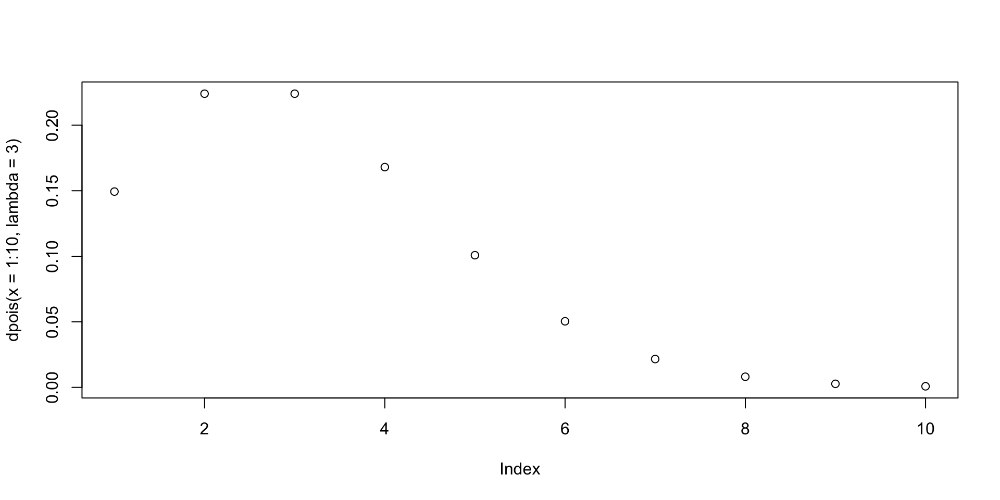Some other common probability distributions
Geometric Distribution
- If a single event has two possible outcomes the probability of having to observe
ktrials before the first “one” appears is given by the geometric distribution - The probability that the first “one” would appear on the first trial is
p, but the probability that the first “one” appears on the second trial is(1-p)*p - By generalizing this procedure, the probability that there will be
k-1failures before the first success is:
\[P(X=k)=(1-p)^{k-1}p\]
- mean = \(\frac{1}{p}\)
- variance = \(\frac{(1-p)}{p^2}\)
Geometric Distribution
- Example: If the probability of extinction of an endangered population is estimated to be 0.1 every year, what is the expected time until extinction?
- The distribution gives the probability of extinction in a given year (requiring that the population did not go extinct in all of the years prior)
- If we want to know the probability of the population going exticnt by year 4, we simply add up the probabilities for years 1-3 using “or” rules

Testing Geometric Distributions
- dgeom gives the density (probability) of an event (p) after (x) failures
Testing Geometric Distributions
- pgeom gives the cumulative probability of event (p) in (q) trials
Negative Binomial Distribution
- Extension of the geometric distribution describing the waiting time until
r“ones” have appeared. - Generalizes the geometric distribution
- Probability of the \(r^{th}\) “one” appearing on the \(k^{th}\) trial:
\[P(X=k)=(\frac{k-1}{r-1})p^{r-1}(1-p)^{k-r}p\]
which simplifies to
\[P(X=k)=(\frac{k-1}{r-1})p^{r}(1-p)^{k-r}\]
- mean = \(\frac{r}{p}\)
- variance = \(r(1-p)/p^2\)
Negative Binomial Distribution
- Example: If a predator must capture 10 prey before it can grow large enough to reproduce
- What would the mean age of onset of reproduction be if the probability of capturing a prey on any given day is 0.1?
- Notice that the variance is quite high (~1000) and that the distribution looks quite skewed

Continuous Probability Distributions
Continuous probability distributions
P(observation lies within dx of x) = f(x)dx
\[P(a\leq X \leq b) = \int_{a}^{b} f(x) dx\]
Remember that the indefinite integral sums to one
\[\int_{-\infty}^{\infty} f(x) dx = 1\]
Continuous probabilities
E[X] may be found by integrating the product of x and the probability density function over all possible values of x:
\[E[X] = \int_{-\infty}^{\infty} xf(x) dx \]
\(Var(X) = E[X^2] - (E[X])^2\), where the expectation of \(X^2\) is
\[E[X^2] = \int_{-\infty}^{\infty} x^2f(x) dx \]
Uniform Distribution
\[E[X] = \int_{a}^{b} x\frac{1}{b-a} dx = \frac{(a+b)}{2} \]

Uniform Distribution
- Means that the probability is equal for all possible outcomes
- Like drawing m&m out of a bag with equal proportions of colors
Uniform Distribution
Exponential Distribution
\[f(x)=\lambda e^{-\lambda x}\]
E[X]can be found be integrating \(xf(x)\) from 0 to infinity
- leading to the result that
- \(E[X] = \frac{1}{\lambda}\)
- \(E[X^2] = \frac{1}{\lambda^2}\)
Exponential Distribution
- For example, let equal the instantaneous death rate of an individual.
- The lifespan of the individual would be described by an exponential distribution (assuming that does not change over time).

Exponential Distribution
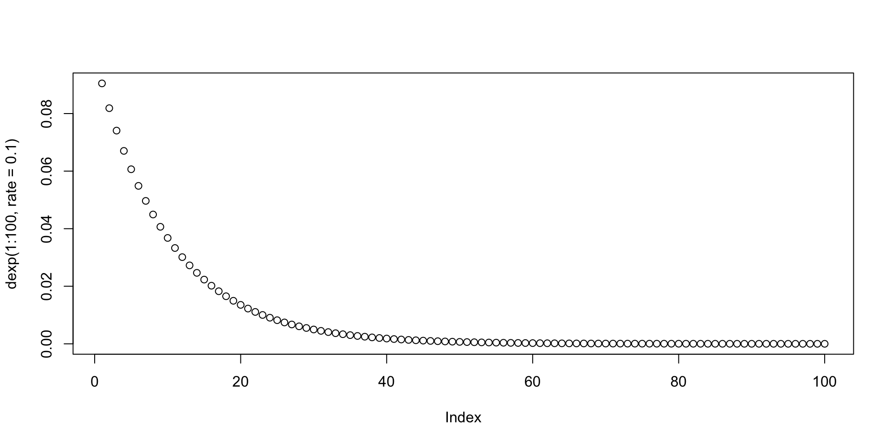Gamma Distribution
- The gamma distribution generalizes the exponential distribution.
- It describes the waiting time until the \(r^{th}\) event for a process that occurs randomly over time at a rate \(\lambda\) :
\[f(x) = \frac{e^{-\lambda x}\lambda x^{r-1}}{(r-1)!}\lambda\]
\[ Mean = \frac{r}{\lambda} \] \[ Variance = \frac{r}{\lambda^2} \]
Gamma Distribution
Example: If, in a PCR reaction, DNA polymerase synthesizes new DNA strands at a rate of 1 per millisecond, how long until 1000 new DNA strands are produced?
Assume that DNA synthesis does not deplete the pool of primers or nucleotides in the chamber, so that each event is independent of other events in the PCR chamber.
The gamma distribution generalizes the exponential distribution.
It describes the waiting time until the \(r^{th}\) event for a process that occurs randomly over time at a rate \(\lambda\)
Common theme in R for distributions
d probability mass function |
p cumulative distribution |
q quantile function |
r pseudorandom number generate |
|
|---|---|---|---|---|
| binomial | dbinom | pbinom | qbinom | rbinom |
| poisson | dpois | ppois | qpois | rpois |
| exponential | dexp | pexp | qexp | rexp |
| normal | dnorm | pnorm | qnorm | rnorm |
Normal (Gaussian) probability distribution
The Normal (aka Gaussian) | Probability Density Function (PDF)
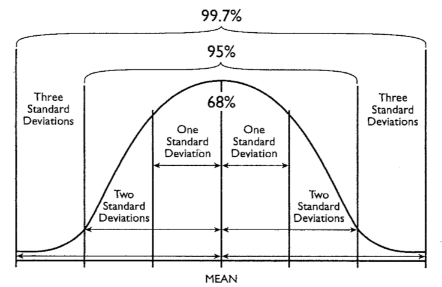Normal PDF
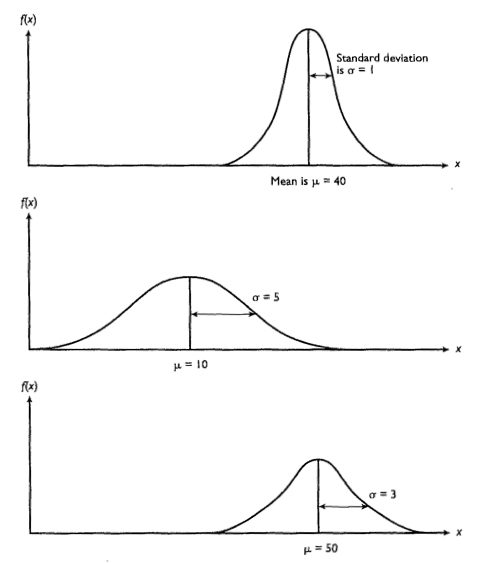Normal PDF | A function of two parameters
(\(\mu\) and \(\sigma\))

where \[\large \pi \approx 3.14159\]
\[\large \epsilon \approx 2.71828\]
To write that a variable (v) is distributed as a normal distribution with mean \(\mu\) and variance \(\sigma^2\), we write the following:
\[\large v \sim \mathcal{N} (\mu,\sigma^2)\]
Normal PDF | estimates of mean and variance
Estimate of the mean from a single sample
\[\Large \bar{x} = \frac{1}{n}\sum_{i=1}^{n}{x_i} \]
Estimate of the variance from a single sample
\[\Large s^2 = \frac{1}{n-1}\sum_{i=1}^{n}{(x_i - \bar{x})^2} \]
z-scores of normal variables
- Often we want to make variables more comparable to one another
- For example, consider measuring the leg length of mice and of elephants
- Which animal has longer legs in absolute terms?
- Proportional to their body size?
- A good way to answer these last questions is to use ‘z-scores’
z-scores of normal variables
- z-scores are standardized to a mean of 0 and a standard deviation of 1
- We can modify any normal distribution to have a mean of 0 and a standard deviation of 1
- Another term for this is the standard normal distribution
\[\huge z_i = \frac{(x_i - \bar{x})}{s}\]
Normal PDF
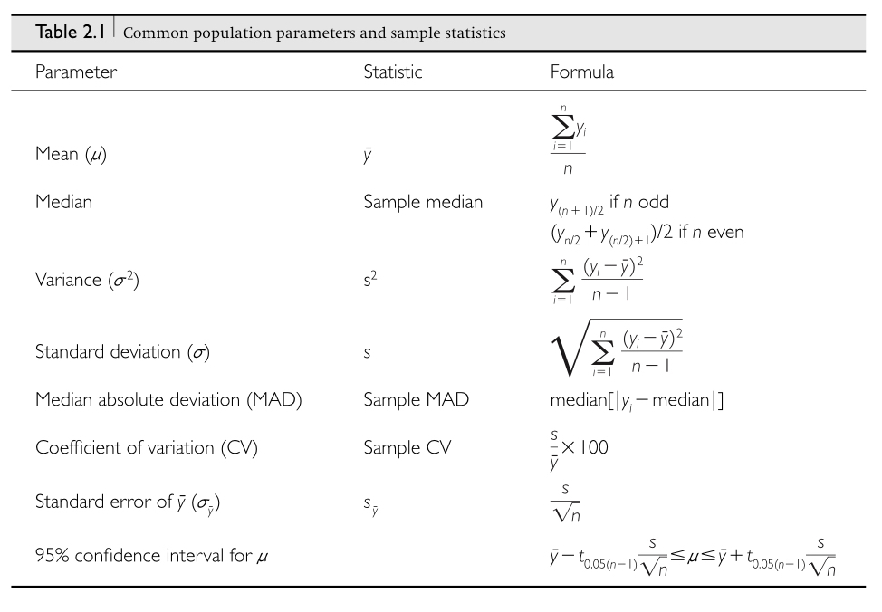Why is the Normal special in biosciences?
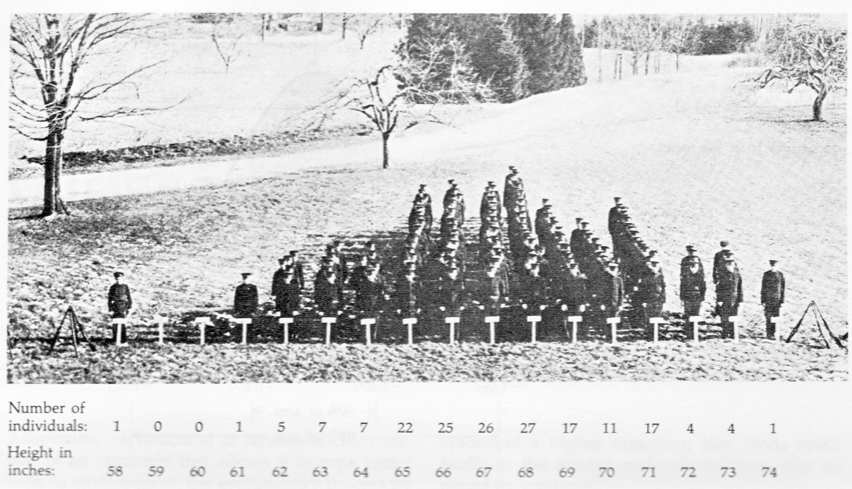Why is the Normal special in biosciences?

Why is the Normal special in biosciences?

Parent-offspring resemblance

Genetic model of complex traits

Distribution of \(F_2\) genotypes | really just binomial sampling

Why else is the Normal special?
It is the basis of estimation and precision of the expected value of all distributions
Provides a mathematical basis for moving from single samples to point estimates.
Provides a way to use simulation to generate empirical sample and test distributions through Monte Carlo approaches
Sampling and estimation
Where do we begin?
- A major goal of statistics is to estimate parameters of a population so that we can compare them to values that are of practical importance to our understanding of the system, or to compare parameter estimates between and among different populations
- This is the first important step before getting to hypothesis testing!
Understanding Populations and their Parameters
- We often think about the samples we are collecting as a part of a larger population
- Since we can’t measure every member of that population, we instead use sampling to estimate the parameters of the population as a whole
- Some common parameters: mean, range, median
- If we performed random sampling, we assume that the parameter estimates of our sample are equitable to the true population parameters
Accuracy vs. Precision
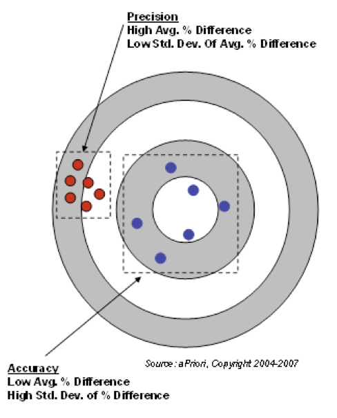Accuracy vs. Precision
- Accuracy is the closeness of an estimated value to its true value
- Precision is the closeness of repeated estimates to one another
- Our goal is to have unbiased estimates that are the most precise
- We have to estimate parameters and test hypotheses by taking samples that approximate the underlying distribution
- The goal of replication is to quantify variation at as many levels in a study as possible
- The goal of randomization is to avoid bias as much as possible
Parameter Estimation
- Parametric (a few special exceptions, like the sample mean and its standard error)
- Ordinary Least Squares (OLS) - optimized procedure that produces one definitive result, easy to use but no estimates of confidence
- Resampling - bootstrapping and randomization
- Maximum Likelihood (ML) - Can provide model-based estimates with confidence, but harder to calculate
- Bayesian Approaches - Incorporates prior information into ML estimation
Estimation
- Estimation is the process of inferring a population parameter from sample data
- The value of one sample estimate is almost never the same as the population parameter because of random sampling error
- Most will be close, but some will be far away
- Sampling distribution of an estimate
- all values we might have obtained from our sample
- probabilities of occurrence
- Standard error of an estimate
- standard deviation of a sampling distribution
- measures the precision of the parameter estimate
- NO ESTIMATE IS USEFUL WITHOUT IT!
The Central Limit Theorem
The Central Limit Theorem
- For most real world data sets we can’t empirically determine a sampling distribution by taking many actual samples, because we often have just the one sample.
- Fortunately, we can rely on the Central Limit Theorem to make some assumptions about sampling distributions, particularly when estimating a mean from a single sample, or when estimating most any parameter using a “pseudo” or re-sampling process we refer to as “bootstrapping”
Calculating the Standard Error
- Think conceptually - how will SEM change as sample size increases?
Calculating the Standard Error
- Think conceptually - how will SEM change as sample size increases?
Estimation and confidence intervals
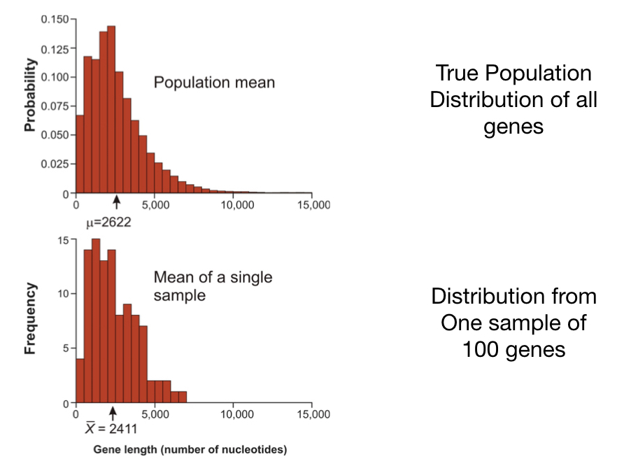Estimation and confidence intervals
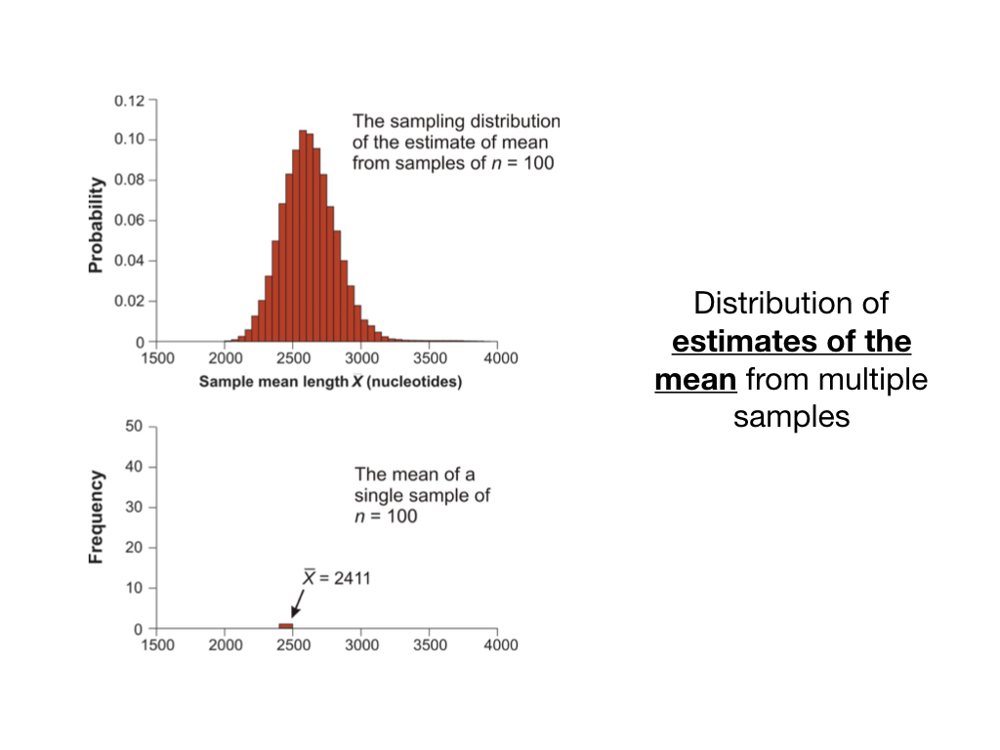Estimation and confidence intervals

Standard Error of the Mean (SEM)
\[\huge \sigma_{\bar{x}} \approx s_{\bar{x}} = \frac{s}{\sqrt{n}} \]
- where \(s_{\bar{x}}\) is the estimated standard error of the distribution of the mean estimates
- which is usually just referred to as the ’standard error of the mean (SEM)
- note that this is not the standard deviation of the original distribution
- importantly, the SEM will go down as the sample size increases
Standard Error of the Mean (SEM)
Sadly, most other kinds of estimates of other parameters do not have this amazing property.
What to do?
One answer: make your own sampling distribution for the estimate using the “bootstrap”.
Method invented by Efron (1979).
Basics of bootstrapping via re-sampling
Loops in R
- R is very good at performing repetitive tasks.
- If we want a set of operations to be repeated several times we use what’s known as a loop.
- When you create a loop, R will execute the instructions in the loop a specified number of times or until a specified condition is met.
- There are two common types of loop in R: the
for loopand thewhile loop
For loops
- The most commonly used loop structure when you want to repeat a task a defined number of times is the for loop. The most basic example of a for loop is:
- How does this appear to be working?
While loops
- Another type of loop that you may use is the while loop.
- The while loop is used when you want to keep looping until a specific logical condition is satisfied.
If and Else Statements
- Conditional statements are how you inject some logic into your code.
- The most commonly used conditional statement is
if.- Whenever you see an
ifstatement, read it as ‘If X is TRUE, then do a thing’.
- Whenever you see an
- Another statement is
else, which extends the logic to ‘If X is TRUE, do a thing, or else do something different’.
A programming joke for conditional statements
A programmer’s partner says: ‘Please go to the store and buy a carton of milk and if they have eggs, get six.’
The programmer returned with 6 cartons of milk.
When the partner sees this, and exclaims ‘Why the heck did you buy six cartons of milk?’
The programmer replied ‘They had eggs’
R INTERLUDE | Simulate a population and sample it!
Simulate a population of 10,000 individual values for a variable x:
Take 1000 random samples of size 20, take the mean of each sample, and plot the distribution of these 1000 sample means.
For one of your samples, use the equation from the previous slide to transform the values to z-scores.
Plot the distribution of the z-scores, and calculate the mean and the standard deviation.
Simulations to compare parameter estimates
- Let’s use our distribution functions from last time to set up some data to play with
- Let’s imagine our data is made up of counts, with an average of 5 counts - which distribution would fit that data best?
- Ex: number of hours spent doing homework by UO undergraduates
Simulations to compare parameter estimates
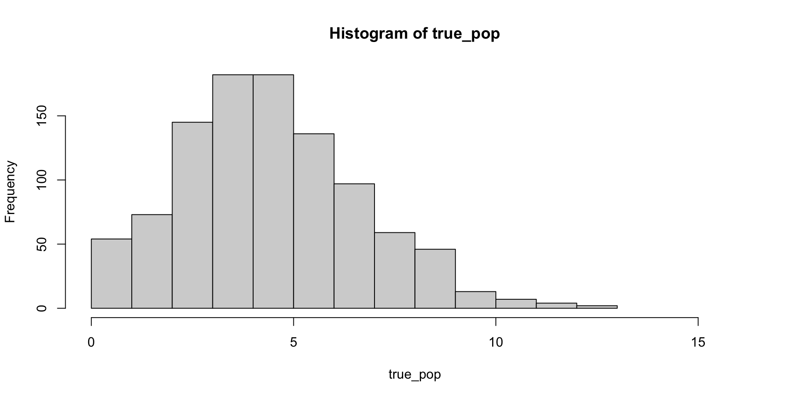Calculating parameters
- How would we calculate the mean and range for this population?
- how about the variance and the standard deviation?
Sampling Exercise
- Since we are working with simulated data, we can also afford to simulate our sampling!
- Try taking a sample from our
true_popdataset and change the sample size, then calculate the mean and range for your sample and see how it compares to the true values. - How many college students are you including in your survey?
Test it out
- Try changing the lambda of the original population, and see how the SD changes
Randomness in Sampling
- Because of the randomness of sampling, you may get close to the true estimates even with a small sample size - but your results will change each time you take a new sample of the same size
- How do we get a feel for how accurate each sample size is? Or which sample size is recommended?
Surveying your Sampling
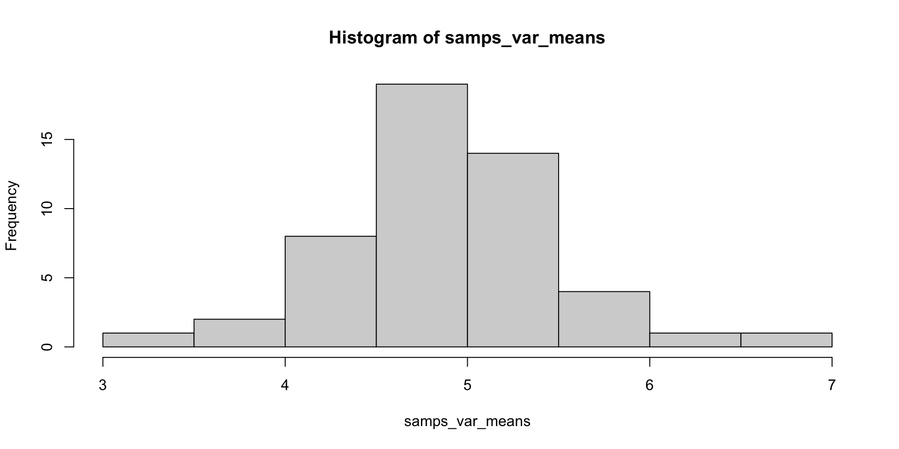Surveying your Sampling
- We get close to the true mean (4.9) about 2/3rds of the time - is this good enough?
FALSE TRUE
17 33 Surveying your Sampling
- This sampling variation is what we have to deal with, and account for, as empirical scientists.
- If this had been a real-world scenario, we likely would be basing our estimate for the true mean on just a single sample mean.
- Getting close to the idea of power - does our experimental design have the power to detect the parameters we are interested in?
Sampling Distributions
- The previous exercise illustrates the concept of a sampling distribution.
- We sampled over and over again (50 times) and calculated the mean for each sample to demonstrate the sampling distribution for the mean, our original parameter of interest.
- One important point is that the sampling distribution for a given parameter is often very different from the variable’s distribution in the population. In many cases, the sampling distribution is normal or approximately so.
Sampling Distributions - It’s been Normal this whole time?!
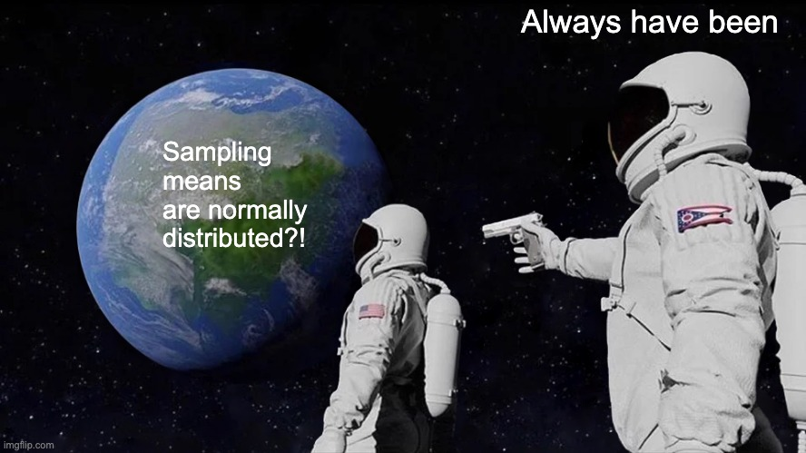Sampling
- Those values represent our true population parameters, which we often cannot know.
- Sampling is the method used in academia and science to try and estimate the true population values.
- We have also discussed how sample size can greatly affect the accuracy of our estimates
Sampling Exercise
- Since we are working with simulated data, we can also afford to simulate our sampling!
- Try taking a sample from our
true_popdataset and change the sample size, then calculate the mean and range for your sample and see how it compares to the true values. - How many college students are you including in your survey?
Sampling Exercise
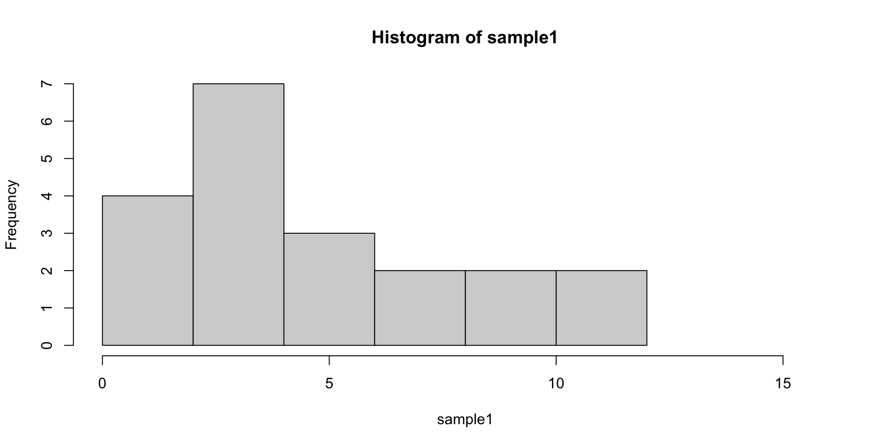Randomness in Sampling
- Because of the randomness of sampling, you may get close to the true estimates even with a small sample size - but your results will change each time you take a new sample of the same size
- How do we get a feel for how accurate each sample size is? Or which sample size is recommended?
Surveying your Sampling
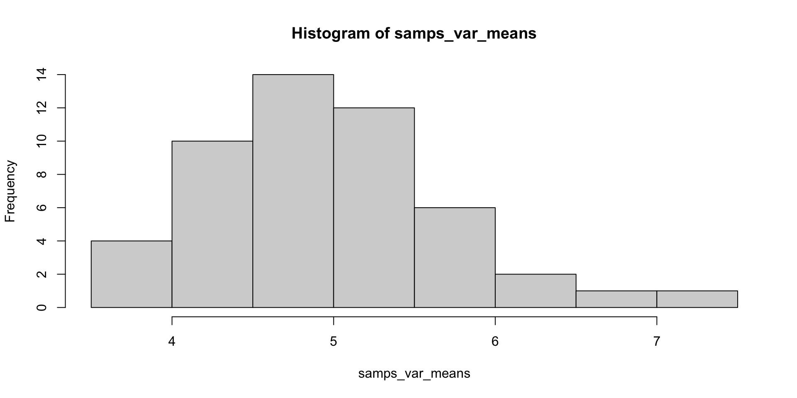Surveying your Sampling
- We get close to the true mean (4.9) about 2/3rds of the time - is this good enough?
Surveying your Sampling
- This sampling variation is what we have to deal with, and account for, as empirical scientists.
- If this had been a real-world scenario, we likely would be basing our estimate for the true mean on just a single sample mean.
- Getting close to the idea of power - does our experimental design have the power to detect the parameters we are interested in?
The etymology of the term ‘bootstrap’
Why the bootstrap is good
- Can be applied to almost any sample statistic
- This includes means, proportions, correlations, regression
- Works when there is no ready formula for a standard error
- For example the median, trimmed mean, correlation, eigenvalue, etc.
- Is nonparametric, so doesn’t require normally-distributed data
- Works for estimates based on complicated sampling procedures or calculations
- For example, it is used in phylogeny estimation
Parameter Estimation | Bootstrap Algorithm
- Use
Rto take a random sample of individuals from the original data - Calculate the estimate using the measurements in the bootstrap sample (step 1)
- This is the first bootstrap replicate estimate
- Repeat steps 1 and 2 a large number of times (1000 times is reasonable)
- Calculate the sample standard deviation of all the bootstrap replicate estimates obtained in step 3
- The resulting quantity is called the bootstrap standard error
R INTERLUDE | Bootstrapping to produce a confidence interval
x <- c(0.9, 1.2, 1.2, 1.3, 1.4, 1.4, 1.6, 1.6, 2.0, 2.0)
- Use R to make 1000 “pseudo-samples” of size 10 (with replacement), using a for loop as before.
- Name the pseudo-sample object “xboot”, and name the means of the xboot samples “z”.
- Plot the histogram of the resampled means, and calculate the standard deviation of the sample means (the bootstrap SEM) using the
sd()function. - How does it compare with the ordinary standard error of the mean calculated from the original, real sample?
sd(x)/sqrt(10)
- Now take one of the genes from the
GacuRNAseq_Subset.csvdata and obtain a bootstrapped estimate of the mean expression level.
R INTERLUDE | Bootstrapping to produce a confidence interval
- The 2.5th and 97.5th percentiles of the bootstrap sampling distribution are a passable 95% confidence interval
- Note that no transformations or normality assumptions needed
- You can use the
quantile()function to calculate these - On your own - use R to figure out the bootstrap distribution for other parameters (such as variance).
-_____________
Bootstrapping
-Unfortunately, most other kinds of estimates (anything not the mean) do not have this amazing property, but we can rely on another approach to calculate the standard error. - This involves generating your own sampling distribution for the estimate using the “bootstrap,” a method invented by Efron (1979). - We call the bootstrap, and other methods that do not rely on distributional assumptions of the variable itself, “nonparametric” approaches.
Easy steps for bootstrapping in R
- Take a random sample (with replacement) from your sample data
- Calculate the estimate using the measurements in the bootstrap sample (step 1). This is the first bootstrap replicate estimate
- Repeat steps 1 and 2 a large number of times (1000 times is reasonable)
- Calculate the sample standard deviation of all the bootstrap replicate estimates obtained in step 3 (SSD = sd(sample)/sqrt(sample size))
Bootstrapping
- The resulting quantity is called the “bootstrap standard error”
- The bootstrap can be applied to almost any sample statistic, including means, proportions, correlations, and regression parameters.
- It works when there is no ready formula for a standard error, for example when estimating the median, trimmed mean, correlation, eigenvalue, etc.
- It is nonparametric, so doesn’t require normally-distributed data, as mentioned. - - It works well for parameter estimates that are based on complicated sampling procedures or calculations. For example, it is used to assess confidence in local relationships within phylogenetic trees.
Confidence Intervals
- A confidence interval is a range of values about a parameter estimate, such that we are X% certain that the true population parameter value lies within that interval.
- For now, know that for a normally distributed sample, a confidence interval about the population mean can be calculated using the t.test() function in base R.
- The 95% confidence interval is commonly reported in statistical analysis results, by convention, but other values are occasionally reported as well.
Coefficient of Variation
- To make standard deviations comparable across populations with very different means, we can instead compare a standardized metric called the “coefficient of variation” (CV), which is simply the sample standard deviation divided by the sample mean (and usually expressed as a % by multiplying by 100).
Hypothesis testing, test statistics, p-values
What is a hypothesis
- A statement of belief about the world
- Need a critical test to
- accept or reject the hypothesis
- compare the relative merits of different models
- This is where statistical sampling distributions come into play
- Statistical distributions are built upon sampling distributions
Hypothesis tests
What is the probability that we would reject a true null hypothesis?
What is the probability that we would accept a false null hypothesis?
How do we decide when to reject a null hypothesis and support an alternative?
What can we conclude if we fail to reject a null hypothesis?
What parameter estimates of distributions are important to test hypotheses?
Null and alternative hypotheses | population distributions
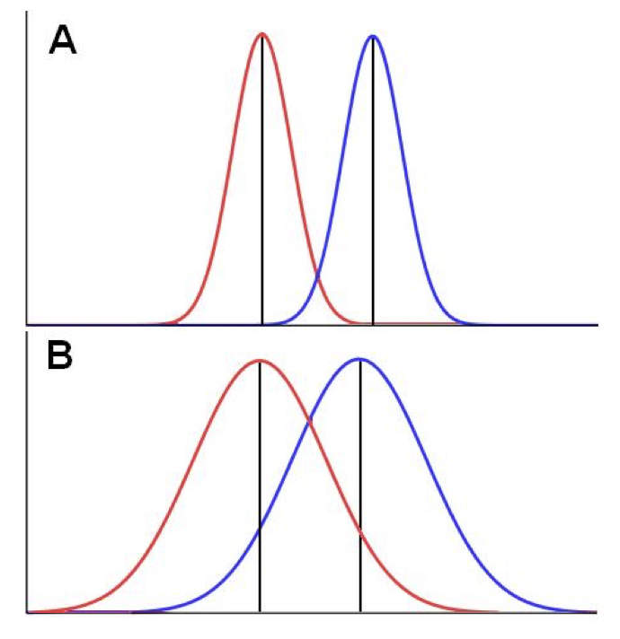Statistical sampling distributions
- Statistical tests provide a way to perform critical tests of hypotheses
- Just like raw data, statistics are random variables and depend on sampling distributions of the underlying data
- The particular form of the statistical distribution depends on the test statistic and parameters such as the degrees of freedom that are determined by sample size.
Statistical sampling distributions
- In many cases we create a null statistical distribution that models the distribution of a test statistic under the null hypothesis.
- Similar to point estimates, we calculate an observed test statistic value for our data
- Then see how probable it was by comparing against the null distribution
- The probability of seeing that value or greater is called the p-value of the statistic
Four common statistical distributions

The t-test and t sampling distribution
\[\large t = \frac{(\bar{y}_1-\bar{y}_2)}{s_{\bar{y}_1-\bar{y}_2}} \]
where

which is the calculation for the standard error of the mean difference
The t-test and t sampling distribution | one-tailed test

The t-test and t sampling distribution | two-tailed test
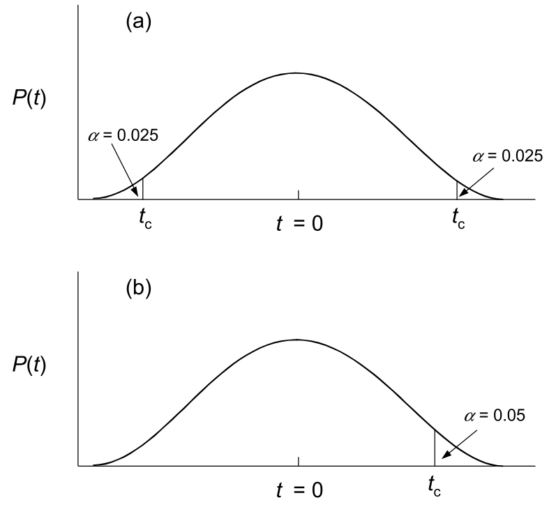Assumptions of parameteric t-tests
- The theoretical t-distributions for each degree of freedom were calculated for populations that are:
- normally distributed
- have equal variances (if comparing two means)
- observations are independent (randomly drawn)
- This is an example of a parametric test
- What do you do if the there is non-normality?
- nonparametric tests such as Mann-Whitney-Wilcoxon
- randomization tests to create a null distribution
Type 1 and Type 2 errors
Components of hypothesis testing
- p-value = the long run probability of rejecting a true null hypothesis
- \(\alpha\) = critical value of p-value cutoff for experiments. The Type I error we are willing to tolerate.
- \(\beta\) = cutoff for probability of accepting a false null hypothesis
- Power = the probability that a test will reject a false null hypothesis (1 - beta). It depends on effect size, sample size, chosen alpha, and population standard deviation
- Multiple testing = performing the same or similar tests multiple times - need to correct alpha value
- Can correct multiple testing using a tax (e.g. Bonferonni) or directly estimating a False Discovery Rate (FDR)
Statistical power
- Type 1 error - \(\alpha\) - incorrectly rejecting a true null hypothesis
- This is saying that there is an effect when there isn’t
- Type 2 error - \(\beta\) - incorrectly accepting a false null hypothesis
- This is saying that there isn’t an effect when there is
- Power is the probability of rejecting a false null hypothesis
- Mostly we shoot for a power of around 80%
- Power can be calculated post hoc or a priori
Power | the things one needs to know
\[ Power \propto \frac{(ES)(\alpha)(\sqrt n)}{\sigma}\]
Power is proportional to the combination of these parameters
- ES - effect size; how large is the change of interest?
- \(\alpha\) - significance level (usually 0.05)
- n - sample size
- \(\sigma\) - standard deviation among experimental units within the same group.
Power | what we usually want to know

Power | rough calculation
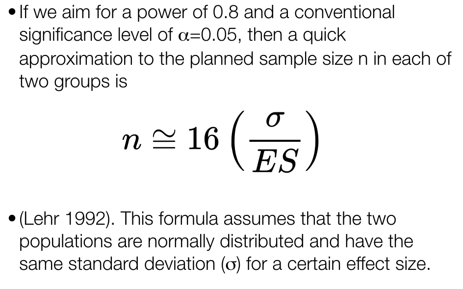R Interlude | Complete Exercises 3.2-3.4

Components of hypothesis testing
- p-value = the long run probability of rejecting a true null hypothesis
- alpha = critical value of p-value cutoff for experiments. The Type I error we are willing to tolerate.
- beta = cutoff for probability of accepting a false null hypothesis
- Power = the probability that a test will reject a false null hypothesis (1 - beta). It depends on effect size, sample size, chosen alpha, and population standard deviation
- Multiple testing = performing the same or similar tests multiple times - need to correct
Null distributions and p-values
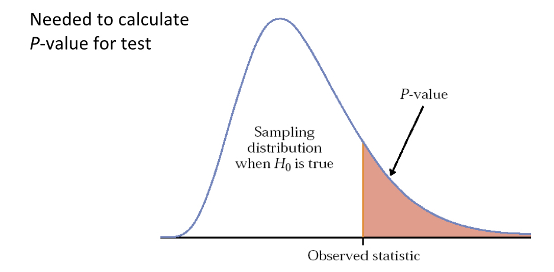Why do we use \(\alpha = 0.5\) as a cutoff?
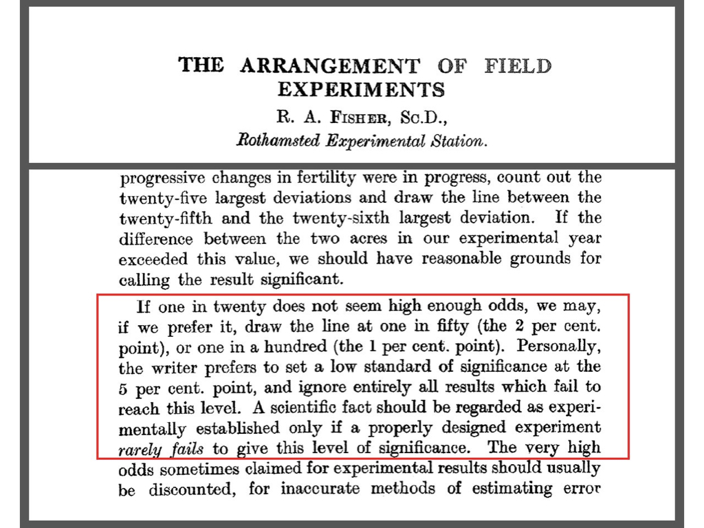R INTERLUDE | Parametric t-test in R
Make a dummy data set that contains one continuous and one categorical value (with two levels). Draw individuals of the two different factor levels from normal distributions with slightly different means. Take 100 obsv. per factor level.
Now, perform a t-test to see if the two populations are statistically different from one another
Repeat steps 1 and 2 above but use different sample sizes (e.g. 10 , then 100, then 1000, then 10,000 obsv. per factor level)
Repeat steps 1 and 2 above but now test between a categorical and continuous variable in the perchlorate data set (or any of your favorite data sets)
R INTERLUDE | Parametric t-test in R
- Now, apply the equations for the t-statistic above to your simulated sample to perform the same test, but using a resampling approach
- hint: go back to your Bootstrapping script
- Use this approach to calculate a distribution of random t statistics assuming the the null hypothesis of no difference is true.
- Now, compare your observed value to your created null distribution.
- What is the probability of that value occurring by chance under the null?
- This is your p-value! (Assume you’re doing a one-tailed test)
- hint: Proportion of values in the null distribution equal to or larger than the observed t-value = p-value
R INTERLUDE | Permutation t-test in R
- Randomization test example 1
- Data: The number of successful broods of pseudoscorpion females that were mated twice to either a single male (SM) or two different males (DM).
- SM:
4 0 3 1 2 3 4 2 4 2 0 2 0 1 2 6 0 2 3 3 - DM:
2 0 2 6 4 3 4 4 2 7 4 1 6 3 6 4
- SM:
- Observed difference in the means between the two
- \(\bar{Y}_{SM}\) − \(\bar{Y}_{DM}\) = 2.2−3.625 = −1.425
R INTERLUDE | Permutation t-test in R
- Steps of the randomization test
- First, create a randomized data set in which the measurements are randomly reassigned (without replacement) to the two groups
- For example, the following
- SM:
4 0 7 4 2 2 2 1 4 4 0 3 3 4 6 2 4 6 0 0 - DM:
2 2 3 3 2 3 3 4 1 2 1 4 6 6 2 0
- Second, calculate the test statistic measuring the association between variables
- difference between group means
- this is the first bootstrap replicate
- Repeat steps 1 and 2 many times to produce many bootstrap replicates
R INTERLUDE | Permutation t-test in R
- Below is the null distribution of the test statistic from 10,000 replications
- This is produced by the randomized assignment of values to each group (SM or DM)
- Thus this is the distribution we’d expect under the null hypothesis of no difference
- The observed value from the data is –1.425
- The area in red is the tail beyond this observed value and is therefore the bootstrap p-value
R INTERLUDE | Permutation t-test in R
- Of these 10,000 randomizations, only 176 had a test statistic (difference between means) equal to or less than the observed value, –1.425.
- You can use the simulated null distribution in the same way as t or F distribution in conventional tests.
- Proportion of values in the null distribution equal or larger than the observed value of the test statistic is 176/10000 = 0.0176.
R INTERLUDE | Perform a one-way ANOVA with power
- Read in the perchlorate data again
- Perform an ANOVA to test Strain on T4_Hormone_Level, but log-transform (base 10) the T4 variable
R INTERLUDE | Perform a one-way ANOVA with power
- Consider the parameters of this test related to power:
- The per-group sample sizes
- The standard deviation (use the higher within-group sd)
- The effect size (|difference between means| / within-grp sd)
- For more complex ANOVA power calculations (>2 groups):
- The total variance
- The within-group variance (use the higher one)
R INTERLUDE | post hoc and a priori power analyses
Based on your results, calculate the power for your ANOVA.
Check out the functions in the ‘pwr’ library (Unnecessary in this case, but could use ANOVA version):
R INTERLUDE | post hoc and a priori power analyses
- effect size approximations:
- f=0.1 (small)
- f=0.25 (medium)
- f=0.4 (large)
- see http://www.statmethods.net/stats/power.html
R INTERLUDE | post hoc and a priori power analyses
- Let’s say you have to repeat the experiment, but your IACUC wants you to get by by using fewer fish.
- You want to be able to detect a minimum mean difference of 1.3 T4 units (about 0.114 on the log10 scale), at a power of 90%.
- First, divide 0.114 by std.dev. of transformed WK values (the higher std. dev. of the two groups) to get a conservative “d”.
- What kind of sample size for the WK group would you need???
- (Again use the pwr.t2n.test() function, but this time specify the WK sample size as the unknown parameter)
Hypothesis testing, test statistics, p-values
What is a hypothesis
- A statement of belief about the world
- Need a critical test to
- accept or reject the hypothesis
- compare the relative merits of different models
- This is where statistical sampling distributions come into play
Hypothesis tests
\(H_0\) : Null hypothesis : Ponderosa pine trees are the same height on average as Douglas fir trees
\(H_A\) : Alternative Hypothesis: Ponderosa pine trees are not the same height on average as Douglas fir trees
Hypothesis tests
What is the probability that we would reject a true null hypothesis?
What is the probability that we would accept a false null hypothesis?
How do we decide when to reject a null hypothesis and support an alternative?
What can we conclude if we fail to reject a null hypothesis?
What parameter estimates of distributions are important to test hypotheses?
Null and alternative hypotheses | population distributions

Null and alternative hypotheses | population distributions
Statistical sampling distributions
- Statistical tests provide a way to perform critical tests of hypotheses
- Just like raw data, statistics are random variables and depend on sampling distributions of the underlying data
- The particular form of the statistical distribution depends on the test statistic and parameters such as the degrees of freedom that are determined by sample size.
Statistical sampling distributions
- In many cases we create a null statistical distribution that models the distribution of a test statistic under the null hypothesis.
- Similar to point estimates, we calculate an observed test statistic value for our data
- Then see how probable it was by comparing against the null distribution
- The probability of seeing that value or greater is called the p-value of the statistic
Four common statistical distributions
The t-test and t sampling distribution
\(H_0\) : Null hypothesis : Ponderosa pine trees are the same height on average as Douglas fir trees
\[H_0 : \mu_1 = \mu_2\]
\(H_A\) : Alternative Hypothesis: Ponderosa pine trees are not the same height as Douglas fir trees
\[H_A : \mu_1 \neq \mu_2\]
The t-test and t sampling distribution
\[\huge t = \frac{(\bar{y}_1-\bar{y}_2)}{s_{\bar{y}_1-\bar{y}_2}} \]
where
which is the calculation for the standard error of the mean difference
The t-test and t sampling distribution | under different degrees of freedom
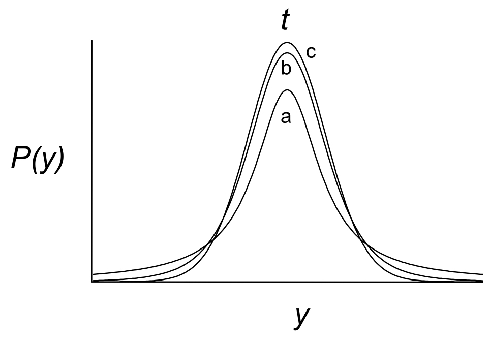The t-test and t sampling distribution | one tailed test

The t-test and t sampling distribution | two tailed test
Assumptions of parameteric t-tests
- The theoretical t-distributions for each degree of freedom were calculated for populations that are:
- normally distributed
- have equal variances (if comparing two means)
- observations are independent (randomly drawn)
- This is an example of a parametric test
- What do you do if the there is non-normality?
- nonparametric tests such as Mann-Whitney-Wilcoxon
- randomization tests to create a null distribution
Type 1 and Type 2 errors
Components of hypothesis testing
- p-value = the long run probability of rejecting a true null hypothesis
- alpha = critical value of p-value cutoff for experiments. The Type I error we are willing to tolerate.
- beta = cutoff for probability of accepting a false null hypothesis
- Power = the probability that a test will reject a false null hypothesis (1 - beta). It depends on effect size, sample size, chosen alpha, and population standard deviation
- Multiple testing = performing the same or similar tests multiple times - need to correct
Null distributions and p-values
Why do we use \(\alpha = 0.5\) as a cutoff?
R INTERLUDE | Parametric t-test in R
Make a dummy data set that contains one continuous and one categorical value (with two levels). Draw individuals of the two different factor levels from normal distributions with slightly different means. Take 100 obsv. per factor level.
Now, perform a t-test to see if the two populations are statistically different from one another
Repeat steps 1 and 2 above but use different sample sizes (e.g. 10 , then 100, then 1000, then 10,000 obsv. per factor level)
Repeat steps 1 and 2 above but now test between a categorical and continuous variable in the perchlorate data set (or any of your favorite data sets)
R INTERLUDE | Parametric t-test in R
- Now, apply the equations for the t-statistic above to your simulated sample to perform the same test, but using a resampling approach
- hint: go back to your Bootstrapping script
- Use this approach to calculate a distribution of random t statistics assuming the the null hypothesis of no difference is true.
- Now, compare your observed value to your created null distribution.
- What is the probability of that value occurring by chance under the null?
- This is your p-value! (Assume you’re doing a one-tailed test)
- hint: Proportion of values in the null distribution equal to or larger than the observed t-value = p-value
R INTERLUDE | Permutation t-test in R
- Randomization test example 1
- Data: The number of successful broods of pseudoscorpion females that were mated twice to either a single male (SM) or two different males (DM).
- SM:
4 0 3 1 2 3 4 2 4 2 0 2 0 1 2 6 0 2 3 3 - DM:
2 0 2 6 4 3 4 4 2 7 4 1 6 3 6 4
- SM:
- Observed difference in the means between the two
- \(\bar{Y}_{SM}\) − \(\bar{Y}_{DM}\) = 2.2−3.625 = −1.425
R INTERLUDE | Permutation t-test in R
- Steps of the randomization test
- First, create a randomized data set in which the measurements are randomly reassigned (without replacement) to the two groups
- For example, the following
- SM:
4 0 7 4 2 2 2 1 4 4 0 3 3 4 6 2 4 6 0 0 - DM:
2 2 3 3 2 3 3 4 1 2 1 4 6 6 2 0
- Second, calculate the test statistic measuring the association between variables
- difference between group means
- this is the first bootstrap replicate
- Repeat steps 1 and 2 many times to produce many bootstrap replicates
R INTERLUDE | Permutation t-test in R
- Below is the null distribution of the test statistic from 10,000 replications
- This is produced by the randomized assignment of values to each group (SM or DM)
- Thus this is the distribution we’d expect under the null hypothesis of no difference
- The observed value from the data is –1.425
- The area in red is the tail beyond this observed value and is therefore the bootstrap p-value
R INTERLUDE | Permutation t-test in R
- Of these 10,000 randomizations, only 176 had a test statistic (difference between means) equal to or less than the observed value, –1.425.
- You can use the simulated null distribution in the same way as t or F distribution in conventional tests.
- Proportion of values in the null distribution equal or larger than the observed value of the test statistic is 176/10000 = 0.0176.
Hypotheses and Parameter Estimations
- Last time we talked about how to estimate a population parameter
- Thinking about true population distribution
- How sampling affects our estimates of the parameter
- How we can create distributions of our estimates using either:
- repeated simulated sampling in R
- or by bootstrapping from our own collected sample data
- The next step is wanting to compare estimated parameters
What is a hypothesis?
- We can compare estimated parameters, while also including measures of uncertainty, using frequentist methods
- Requires statistical hypotheses: a statement of belief about the world
- Need a critical test to
- accept or reject the hypothesis
- compare the relative merits of different models
What is a hypothesis?
- This is where statistical sampling distributions come into play
- Statistical distributions are built upon sampling distributions
- Will tell us how “frequently” we expect to see a result as extreme as ours
Null and Alternative Hypotheses
- Because of the nature of logic and deduction, we can never prove a positive
- Have we really observed all possible circumstances that could disprove our hypothesis?
- But we can reject a hypothesis based on our observations
Null and Alternative Hypotheses
- Easiest examples: we want to know if two populations differ from one another
- We make a simple statement, for example, “I hypothesize that on average the variable X differs between the treatment and control groups.”
- We can make an opposite statement: “I hypothesize that on average the variable X does not differ between the treatment and control groups.”
- Now we have our null hypothesis and alternative hypothesis
Null and alternative hypotheses
- Think on the work you are doing: rotation project, dissertation aim, etc.
- Does your question have a null and alternative hypothesis?
Hypothesis tests
What is the probability that we would reject a true null hypothesis?
What is the probability that we would accept a false null hypothesis?
How do we decide when to reject a null hypothesis and support an alternative?
What can we conclude if we fail to reject a null hypothesis?
What parameter estimates of distributions are important to test hypotheses?
Null and alternative hypotheses | population distributions
- Which scenario do you think will be easier to find a difference?
- What factor(s) will make our statistical tests better?
Statistical sampling distributions
- Statistical tests provide a way to perform critical tests of hypotheses
- Just like raw data, statistics are random variables and depend on sampling distributions of the underlying data
- The particular form of the statistical distribution depends on the test statistic and parameters such as the degrees of freedom that are determined by sample size.
- Essentially: we get a distribution for statistics values too! How frequently do we see a statistics value as large/small as this one?
Statistical sampling distributions
- In many cases we create a null statistical distribution that models the distribution of a test statistic under the null hypothesis.
- Similar to point estimates, we calculate an observed test statistic value for our data.
- Then see how probable it was by comparing against the null distribution.
- The probability of seeing that value or greater is called the p-value of the statistic.
Statistical sampling distributions
- An example of a test statistic is the t-statistic.
- The t-statistic is a standardized difference between two sample means
- t = 0 indicates no difference between population means
- t-distribution is Normal, with the center and peak at 0
- We can evaluate the t-statistic for our sample data and see whether it falls far enough away from zero - then we reject the null hypothesis
Four common statistical distributions
Statistical Distributions
- The shape and associated parameters of a distribution used to evaluate a test statistic also depend on sample properties such as sample size.
- Degrees of freedom are also an important parameter for critical tests.
A tangent on degrees of freedom
- In statistics, degrees of freedom refers to the number of values in a calculation that are free to vary.
- Example: you have a set of numbers, like 1, 2, 3, and 4. If you know the average (mean) of these numbers is 3, you can actually choose three of the numbers freely, but the fourth number will be determined by the other three. So in this case, you have three degrees of freedom.
- This answer comes from ChatGPT!
Degrees of freedom exercise
- Try out this concept in R
- Randomly sample from a list of numbers (1-10) 5 numbers
- Calculate the mean for that group of numbers
- If you were to add a sixth number, what would it have to be for the mean to = 7?
On a scale of Murica to 10, how many degrees of freedom do you have?
Components of hypothesis testing
- p-value = the long run probability of rejecting a true null hypothesis
- \(\alpha\) = critical value of p-value cutoff for experiments. The Type I error we are willing to tolerate.
- \(\beta\) = cutoff for probability of accepting a false null hypothesis
- Power = the probability that a test will reject a false null hypothesis (1 - beta). Depends on effect size, sample size, chosen alpha, and pop standard deviation
Why do we use \(\alpha = 0.5\) as a cutoff?
Type 1 and Type 2 errors
Components of hypothesis testing
- Multiple testing = performing the same or similar tests multiple times - need to correct alpha value
- Can correct multiple testing using a tax (e.g. Bonferonni) or directly estimating a False Discovery Rate (FDR)
Statistical power
- Type 1 error - \(\alpha\) - incorrectly rejecting a true null hypothesis
- This is saying that there is an effect when there isn’t
- Type 2 error - \(\beta\) - incorrectly accepting a false null hypothesis
- This is saying that there isn’t an effect when there is
- Power is the probability of rejecting a false null hypothesis
- Mostly we shoot for a power of around 80%
- Power can be calculated post hoc or a priori
Power | the things one needs to know
\[ Power \propto \frac{(ES)(\alpha)(\sqrt n)}{\sigma}\]
Power is proportional to the combination of these parameters
- ES - effect size; how large is the change of interest?
- \(\alpha\) - significance level (usually 0.05)
- n - sample size
- \(\sigma\) - standard deviation among experimental units within the same group.
Power | what we usually want to know
The t-test and t sampling distribution
- Now we’re going to talk about one example - the t statistic
The t-test and t sampling distribution
- To calculate the t-statistic for two populations:
\[\large t = \frac{(\bar{y}_1-\bar{y}_2)}{s_{\bar{y}_1-\bar{y}_2}} \]
where s is the standard error of the mean difference
The t-test and t sampling distribution | one-tailed test
The t-test and t sampling distribution | two-tailed test
Assumptions of parameteric t-tests
- The theoretical t-distributions for each degree of freedom were calculated for populations that are:
- normally distributed
- have equal variances (if comparing two means)
- observations are independent (randomly drawn)
- This is an example of a parametric test
Let’s try it out
- Use the below code to set up two simulated populations:
LEt’s try it out
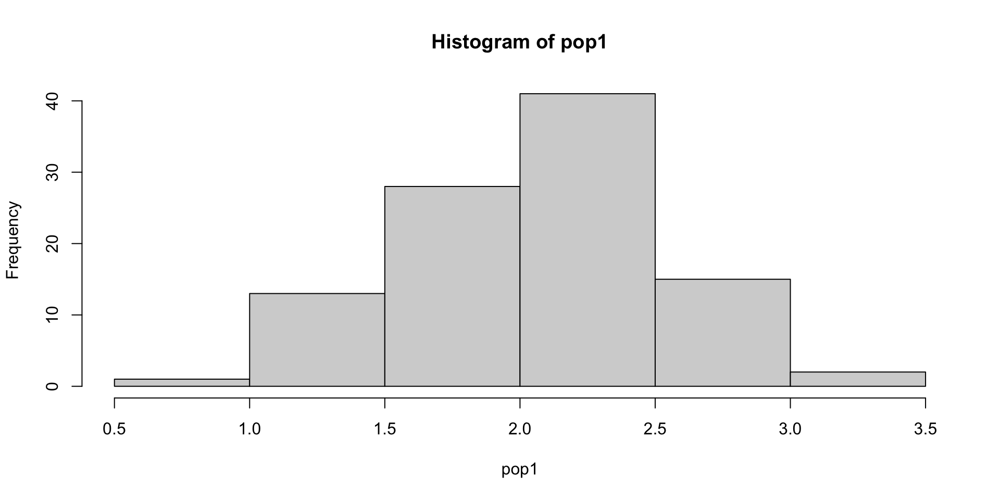
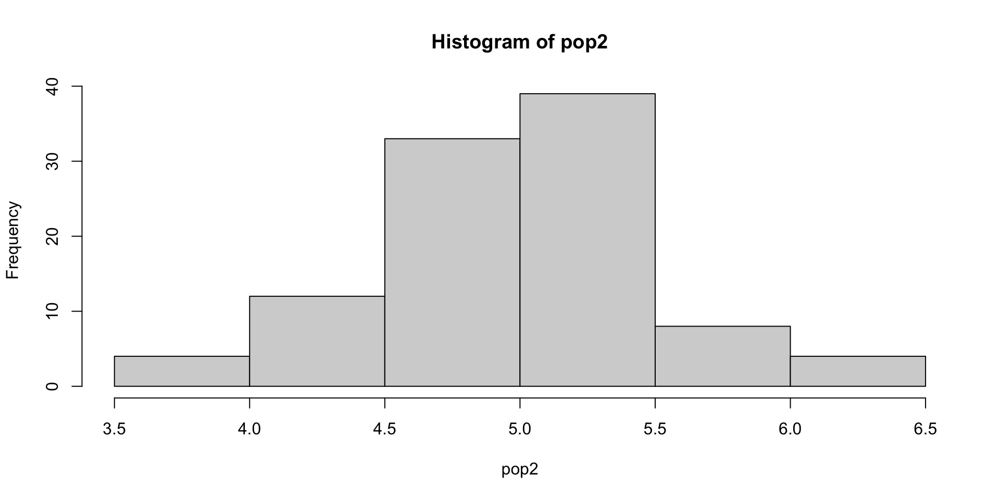
First, is the distribution/spread the same?
- Use the function
var.test()in R - How do we interpret this?
F test to compare two variances
data: pop1 and pop2
F = 0.8257, num df = 99, denom df = 99, p-value = 0.3423
alternative hypothesis: true ratio of variances is not equal to 1
95 percent confidence interval:
0.5555635 1.2271791
sample estimates:
ratio of variances
0.8256973 Now for the t-test!
- Use the function
t.test()in R - How do we interpret this? How would you write this conclusion as a sentence?
Welch Two Sample t-test
data: pop1 and pop2
t = -41.396, df = 196.21, p-value < 2.2e-16
alternative hypothesis: true difference in means is not equal to 0
95 percent confidence interval:
-3.075616 -2.795896
sample estimates:
mean of x mean of y
2.035190 4.970946 Nonparametric tests
- What if your data does not meet the requirements of a parametric t-test?
- What do you do if the there is non-normality?
- nonparametric tests such as Mann-Whitney-Wilcoxon
- randomization tests to create a null distribution
Mann-Whitney-Wilcoxon Tests
- The Mann-Whitney U (also called “Mann-Whitney-Wilcoxon) Test tests for distributional differences between the ranks of two samples.
- In R the function wilcox.test() can be used to perform it, in much the same way the t.test() function is used.
Let’s try it out
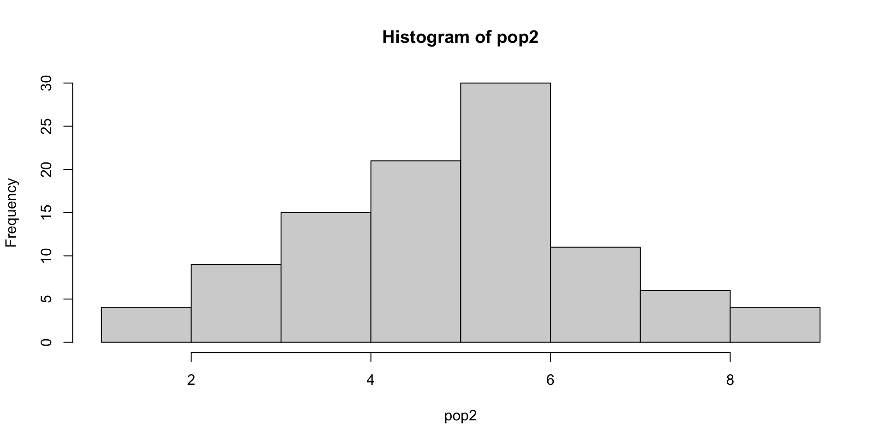Test the variance
- Use the function we used before to see if the variance is the same or different between pop1 and pop2
- How do we interpret this?
The Mann Whit U Test
- Use the function
wilcox.test()in R to compare pop1 and pop2 - How do we interpret that result? How would you write it as a sentence for a paper?
The Mann Whit U Test
Wilcoxon rank sum test with continuity correction
data: pop1 and pop2
W = 440, p-value < 2.2e-16
alternative hypothesis: true location shift is not equal to 0Null distributions and p-values
- We can also create a null statistical distribution that models the distribution of a test statistic under the null hypothesis
- To create the null distribution we can use either randomization or resampling
Creating a null distribution through randomization
- Combine values from both populations into a single vector
- Randomly shuffle the vector using the sample() function
- Calculate a t statistic based on the first n1 and n2 observations as our “pseudo samples” from “populations” 1 and 2, respectively, and save the value
- Repeat steps 2 and 3 many times (e.g. 1000)
- Calculate the proportion of pseudo replicates in which t is ≥ to our original, observed value of t. This proportion is our estimated p-value for the test.
Let’s do it - the starting populations
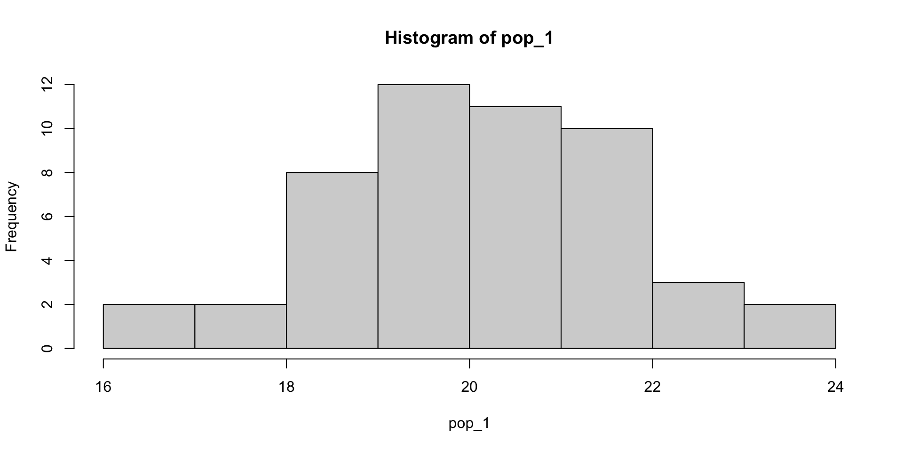
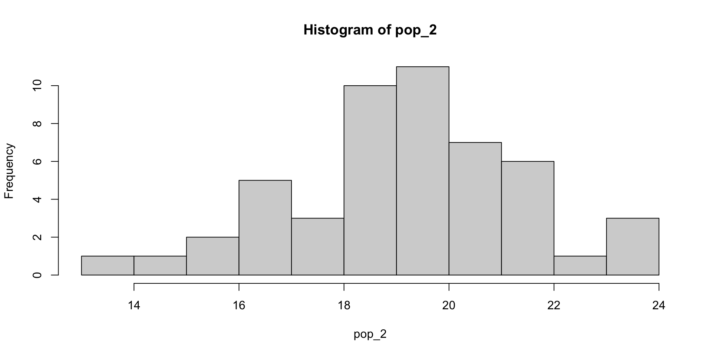
Calculate the t-test
Combine the populations, sample from that, and calculate t-tests
Plot the null distribution
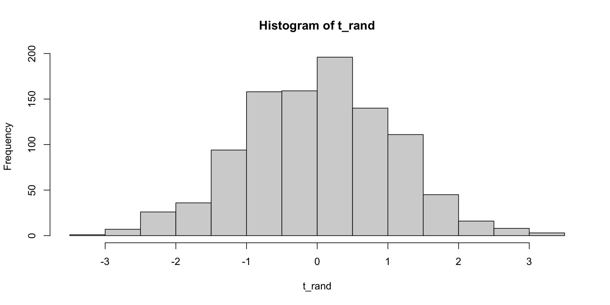Null distributions and p-values
What’s our result?
- How do we interpret this?
[1] 0.016Next time
- Different data types and more hypothesis testing - more examples
- Next Problem Set available later today or tomorrow - look for a Canvas announcement
Week 8A - Hypothesis testing and Power analyses
Today we’re going to
- Practice some more with exploratory data analysis and hypothesis testing
- Run through an example of a power analysis
A Brief Note on Problem Sets
- Your next problem set has you analyzing some of my own data, since most of you did not have data of your own yet
- We’re going to get you started on that today!
- On the problem set you turned in today, I asked whether you would prefer to re-do an old assignment or have a new assignment as your final Problem Set - with mixed results!
Hypothesis Testing
Part 1 Exploratory Data Analysis
- For this assignment, you will use the data set, “Mostoufi2022_Recombination”, available in the Problem Set 5 directory.
- From: Mostoufi, S. L., & Singh, N. D. (2022). Diet-induced changes in titer support a discrete response of Wolbachia-associated plastic recombination in Drosophila melanogaster. G3 (Bethesda, Md.), 12(1), jkab375. https://doi.org/10.1093/g3journal/jkab375
The Background
- We tested how Wolbachia, diet, and Wolbachia concentration (titer) affected recombination
- Group levels: Wolbachia infected and uninfected; control, sucrose-enriched, and yeast-enriched diets; and interactions between infection and diet to change bacterial titer
Recombination
- Measured recombination rate using classic backcrossing scheme with visible markers across the yellow-vermillion interval of the X chromosome
- Compare “recombinants” to total offspring per vial
\[ RF = \frac{Recombinants}{Total} \]
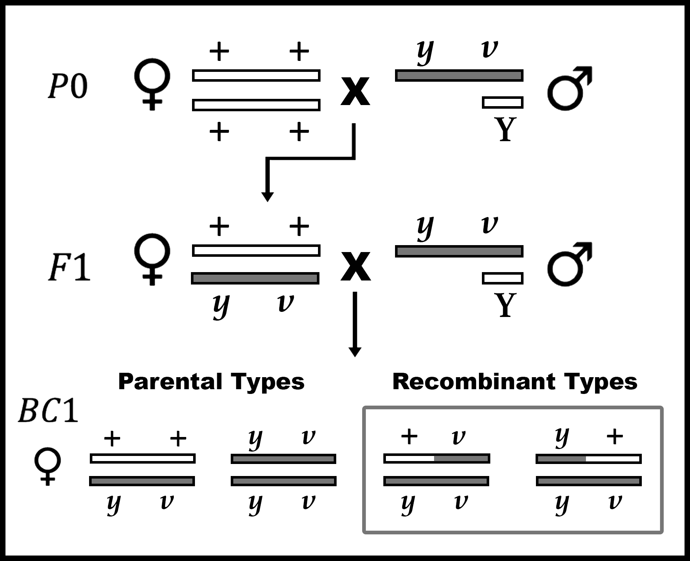Let’s take a look
- Open up the appropriate file in either R or Excel and take a look at it
- Can you identify what each column indicates?
- Parentals: wild type or yellow-vermillion
- Recombinants: yellow or vermillion only
Some calculations
- Create a “Parental” column by adding up the “wild wild” (++) and “yellow vermillion” (yv) columns for each row. Print out the first 3 rows of the data set to show that your calculations worked. (9pts)
Some calculations
- Create a “Recombinant” column by adding up the “yellow wild” and “wild vermillion” columns for each row. Print out the first 3 rows of the data set to show that your calculations worked. (9pts)
Some calculations
- Create a “RecombinantFraction” column by dividing the “Recombinant” column by the sum of the Parental and Recombinant columns. Print out the first 3 rows of the data set to show that your calculations worked. (10pts)
\[ RF = \frac{Recombinants}{Total} \]
Some calculations
- Using an R command, determine whether the variance of RecombinantFraction of the Wolbachia infected and uninfected groups are approximately equal. (10 pts)
- A good first step would be to plot the values for each group (Part 2 from homework)
- What are you measuring? What are the groups?
- What plot would you use? How would you describe the disribution of the data?
Some calculations
- What are you measuring? What are the groups? What R command should you use?
- How do you interpret this result?
Some calculations
Depending on your results in 1.5, use the appropriate statistical test to evaluate the difference in the means of RecombinantFraction between the Wolbachia-infected and uninfected groups. (20 pts)
Based on your results in 1.6, write a description of your analysis results in 1-2 complete sentences. (10 pts)
Power Analyses
What is a power analysis?
- Type 1 error - \(\alpha\) - incorrectly rejecting a true null hypothesis
- This is saying that there is an effect when there isn’t
- Type 2 error - \(\beta\) - incorrectly accepting a false null hypothesis
- This is saying that there isn’t an effect when there is
- Power is the probability of rejecting a false null hypothesis
- Mostly we shoot for a power of around 80%
- Power can be calculated post hoc or a priori
Statistical power
- What factors can affect the power of our experiment - our ability to avoid a Type 2 error?
Statistical power
- What factors can affect the power of our experiment - our ability to avoid a Type 2 error?
- Sample size
- Effect size (difference between the groups)
- Variance (range of values for this trait/measure)
A priori Power analyses
- Before we start an experiment, we are interested in what sample size we should collect
- We can use simulations to test different sample sizes
An example
- Let’s say we’re studying college students again, and we’re interested in seeing if there’s a difference in study hours between freshman and seniors
- How many students should we sample?
- This will depend on our predictions about the effect size of this measurement
Steps to power analysis
- Simulate the true distributions of our populations (decide on effect size, distribution type, and variance)
- Draw random samples of different sizes from those populations
- Perform our statistical test (t-test) on these samples
- Repeat 2 & 3 ~1000 times
- Plot our resulting p-values against sample size
Step 1: simulating our true populations
- What is the distribution type?
- What is the effect size: difference in means between populations?
- What is the variance?
Step 1: simulating our true populations
Step 1: simulating our true populations
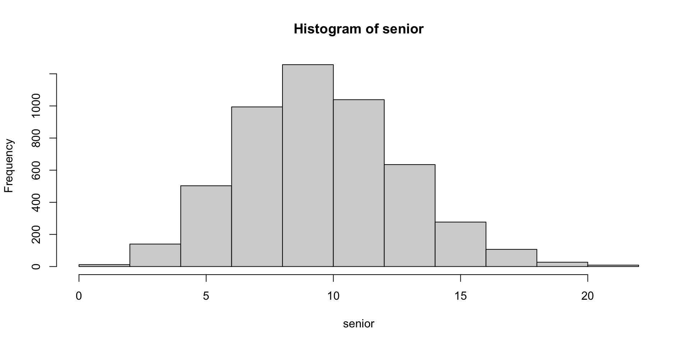
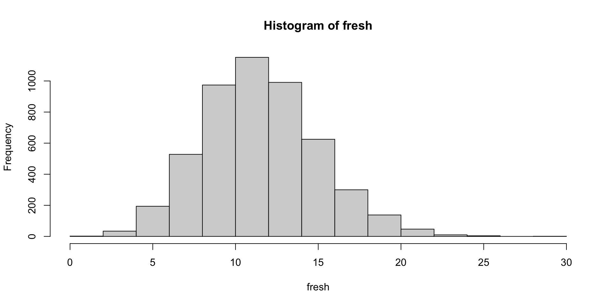
Step 2: drawing a sample
Step 2: drawing a sample
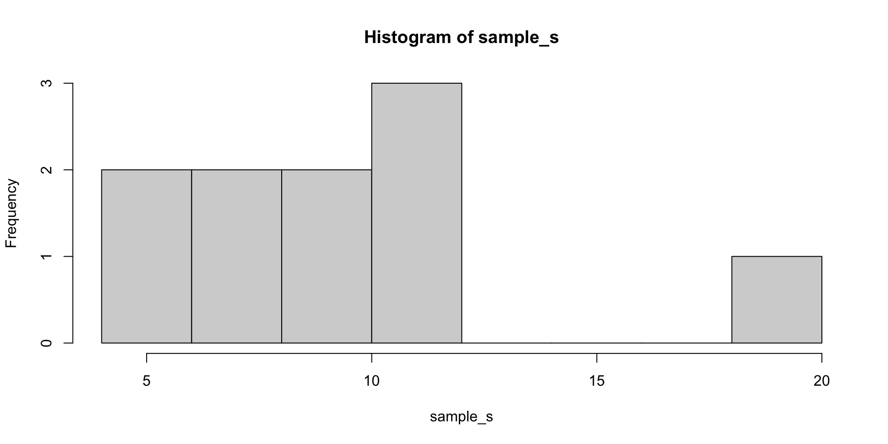
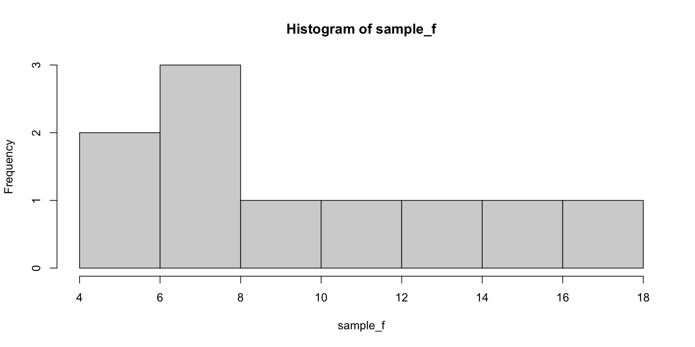
Step 3: statistical test
Welch Two Sample t-test
data: sample_f and sample_s
t = 0, df = 17.678, p-value = 1
alternative hypothesis: true difference in means is not equal to 0
95 percent confidence interval:
-4.002509 4.002509
sample estimates:
mean of x mean of y
9.9 9.9 Step 4: setting up our replicates
- Take a look at the “samps_var” vectors, how are they arranged? How would we begin conducting t-tests using each replicate from the two populations?
Step 4: Testing our replicates
FALSE TRUE
77 23 Step 4 contd: changing the sample size
Step 4 contd: multiple sample sizes
- Requires a more complex for loop
Associations among variables
More than one variable | Bivariate normal, correlation and covariation
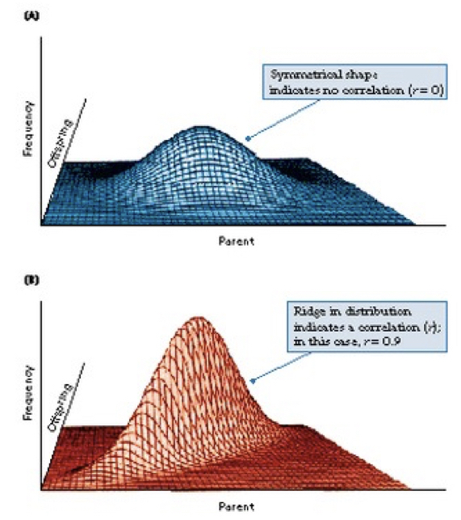More than one variable | Bivariate normal, correlation and covariation
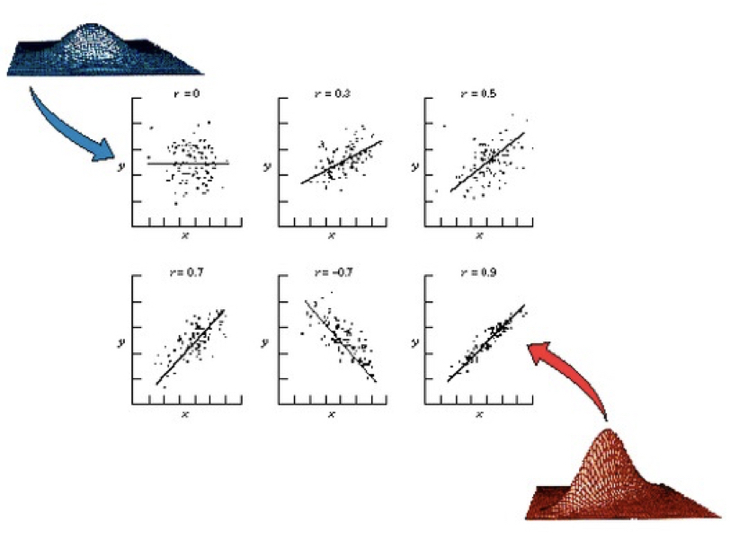Covariance and Correlation
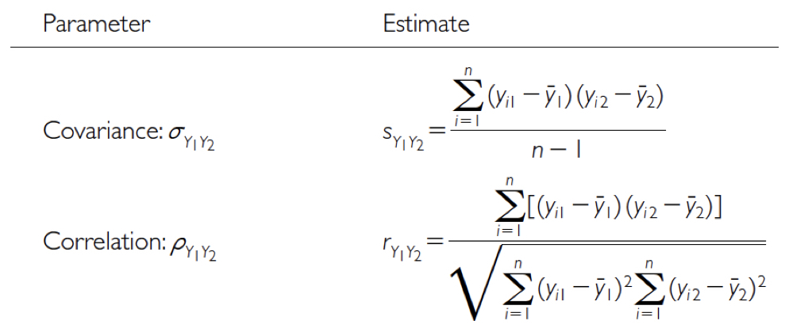Linear Models
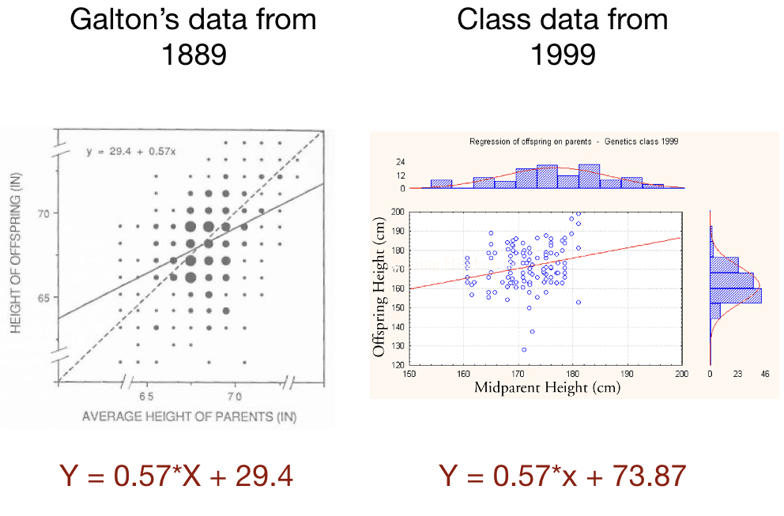Show the data! | Anscombe’s Quartet
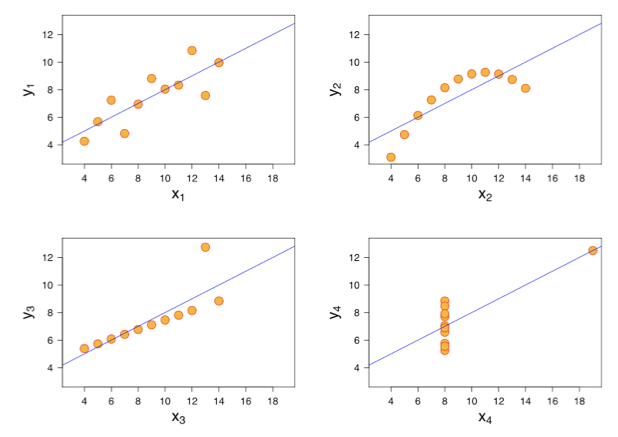Show the data! | Anscombe’s Quartet
Mean of x in each case 9 (exact)
Variance of x in each case 11 (exact)
Mean of y in each case 7.50 (to 2 decimal places)
Variance of y in each case 4.122 or 4.127 (to 3 decimal places)
Correlation between x and y in each case 0.816 (to 3 decimal places)
Linear regression line in each case \(y =3.00 + 0.50x\) (to 2 decimal places)
BioE_Stats_2025 - Knight Campus